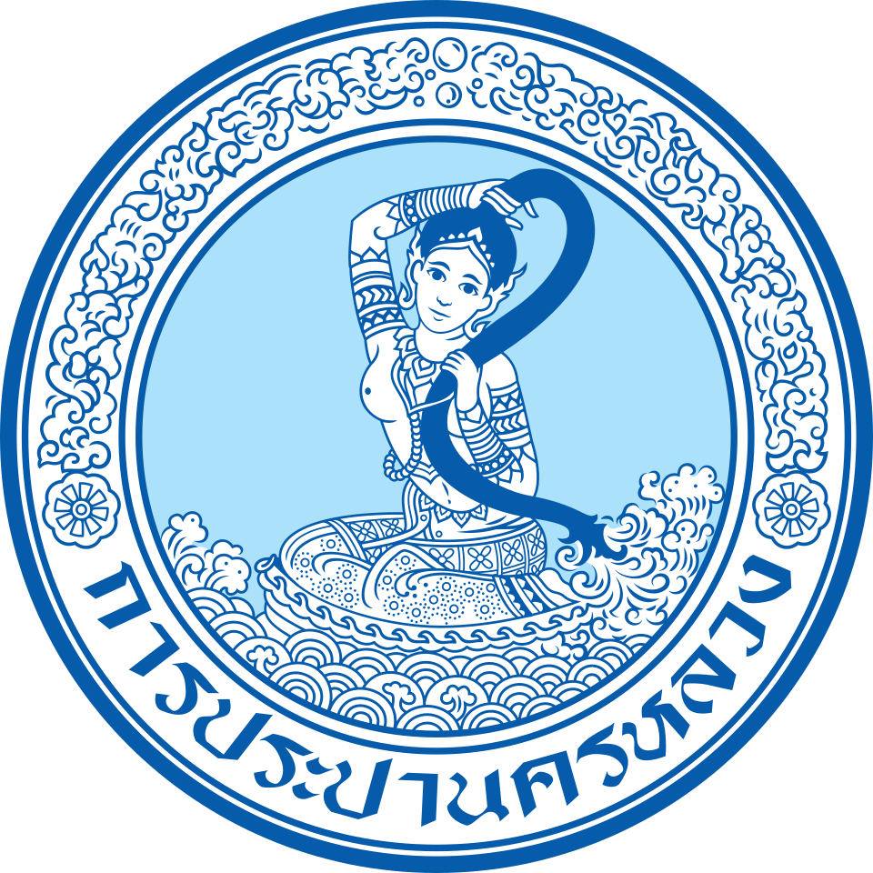
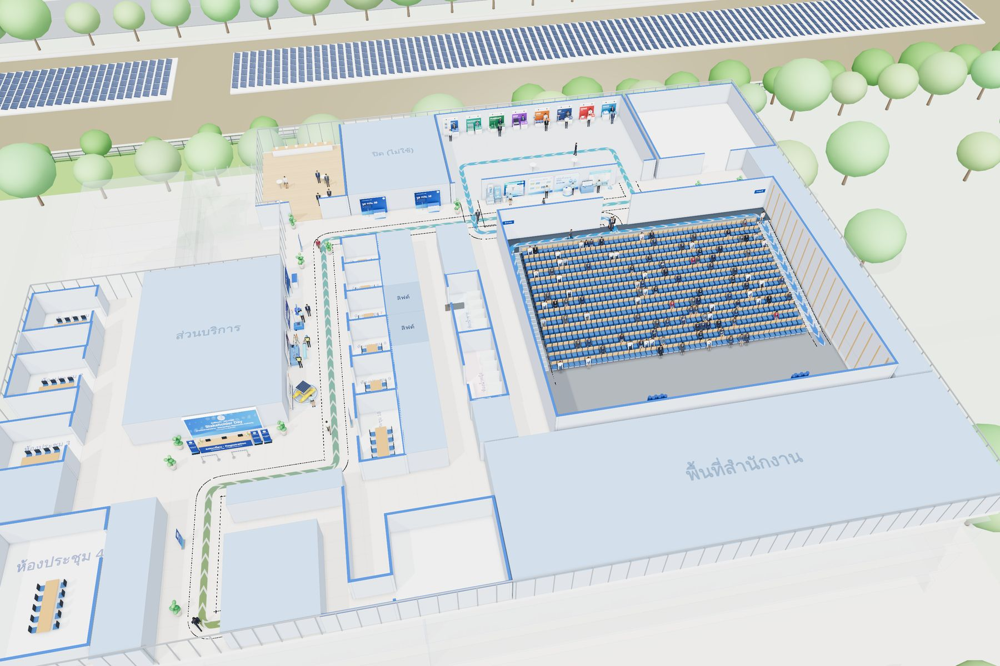

การประปานครหลวงStakeholder Day
ภาพจำลองการจัดงานชั้น 5 อาคารสุทธิอุทกากร ตั้งแต่ออกจากลิฟต์จนถึงห้องประชุม
กำลังเตรียมฉาก 3 มิติ กดเริ่มได้เลย

- แผนที่บินเข้าหาอาคาร กปน.
- แยกชั้นอาคารสุทธิอุทกากร 12 ชั้น เปิดออกถึงชั้น 5
- ชั้น 522 บูธ ทางเดินกว้าง 4–7 ม.
- นำชมทีละส่วน 12 ขั้น